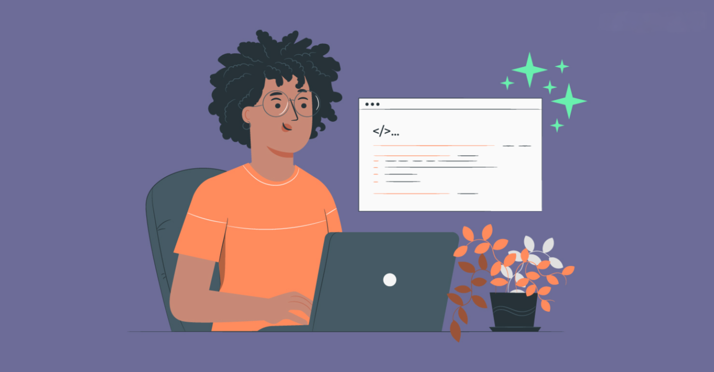

Bem-vindo(a) à nossa vitrine criativa! Aqui você encontra os projetos desenvolvidos por jovens talentos que estão
dando os primeiros passos no mundo do web design. Esses trabalhos representam não apenas suas habilidades
técnicas, mas também sua criatividade e dedicação para transformar ideias em experiências digitais impactantes.
Cada projeto é uma expressão única, criada a partir do aprendizado de ferramentas modernas e das melhores práticas
de design e desenvolvimento web. De sites interativos a layouts responsivos, nossos jovens designers demonstram
que estão preparados para atender às demandas do mercado e criar soluções inovadoras.
Convidamos você a explorar, se inspirar e, quem sabe, colaborar com esses talentos em ascensão. Juntos, eles estão
moldando o futuro da web com paixão e originalidade.